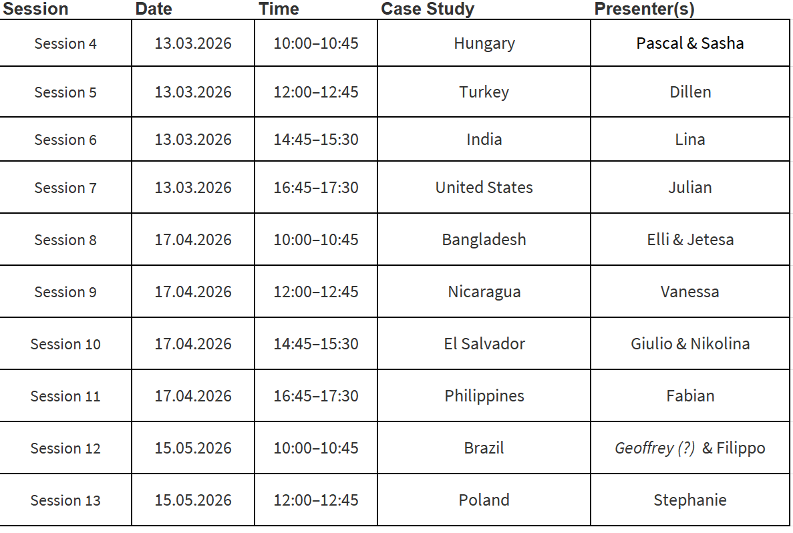
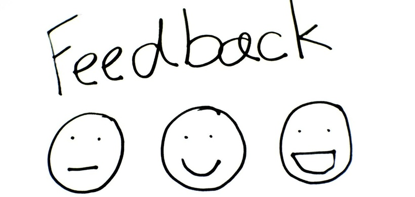
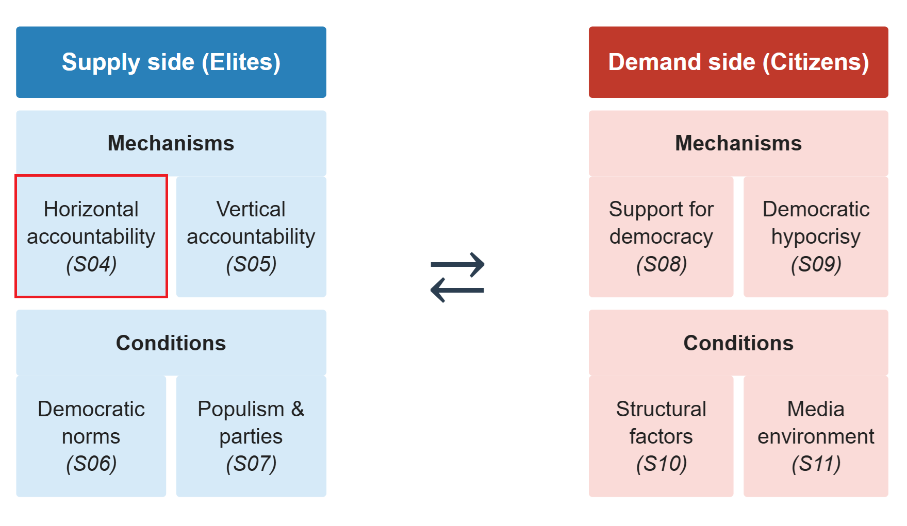

Weakening Horizontal Accountability
The Politics of Democratic Backsliding
Session 04
University of Lucerne
Organization and feedback
Presentations’ calendar review

Feedback round
Readings
Response papers
Presentations
Slides

Introduction to the session
Democracy & backsliding
Democracy: a political system in which citizens elect the government through free and fair elections, and where there are protections for civil liberties and political rights
Democratic backsliding: state-led subtle and incremental erosion of democratic qualities and institutions
Our analytical framework


This session’s goals
- Define accountability: vertical and horizontal
- Explore how would-be autocrats weakens horizontal accountability
- Discuss the implications of weakening horizontal accountability for democratic backsliding
- Students’ presentation: the case of Hungary
Democracy and accountability
The political outcomes of democracy
So far: democracy as competition among elites (Przeworski) and as participation rights for citizens (Dahl)
But democracies also produce political outcomes: decisions that organise collective life
Normatively, democracy channels outcomes toward citizens’ preferences via two mechanisms:
- Representation
- Accountability
What is accountability?
Accountability is traditionally understood as the capacity of citizens to punish or reward politicians for their performance
- Vast empirical implications (e.g. economic voting)
Mechanisms:
- Elections
- Petitions, protest, etc.
- Media
Vertical vs. horizontal accountability
This definition of accountability coincides with what Guillermo O’Donnell (1994) calls vertical accountability
In institutionalised democracies, accountability also runs horizontally
“[…] existence of state agencies that are legally empowered—and factually willing and able—to take actions ranging from routine oversight to criminal sanctions or impeachment in relation to possibly unlawful actions or omissions by other agents or agencies of the state” (O’Donnell, 1998)
Thus, horizontal accountability means that elites hold other elites (i.e., the government) responsible for their actions
Accountability as a principal-agent problem
Principal
Citizens / other state institutions
Delegate authority, set goals
Agent
Government / executive
Acts on behalf of the principal
The problem: agents hold informational advantages and may pursue their own interests
Accountability mechanisms are designed to reduce this gap
Accountability and democracy
Remember Przeworski’s notion of democracy:
Democracy is a self-enforcing equilibrium: actors expect future opportunities to compete and win; defeats are understood as temporary; the rules appear fair and effective; abandoning democracy would worsen their situation
Ultimately, the stakes of elections should not be so high that losers prefer to fight rather than accept defeat
How does accountability relate to this conception of democracy?
Weakening horizontal accountability
Stealth authoritarianism (Varol, 2015)
Legal and rational-choice perspective on how authoritarian practices operate through legal mechanisms designed for democracy
Delineate some of the main mechanisms through which would-be autocrats weaken horizontal accountability
Judicial Review
Libel lawsuits & non-political crimes
Surveillance law and institutions
Highlights a key paradox of backsliding: democracy-promotion mechanisms may provide cover to backsliding practices
Judicial review
Courts designed to check the executive are repurposed to augment it
Three strategies:
- Consolidating power: structure appointment processes to install loyalists (Turkey’s Constitutional Court structured after 1960 coup to favour the military; Hungary: Orban expanded court from 8 to 15, all new seats filled by Fidesz allies)
- Bolstering credentials: use courts to give constitutional imprimatur to anti-democratic acts
- Avoiding accountability: judicial review shields incumbents from challenge while appearing neutral
Libel lawsuits & non-political crimes
Libel suits target media and civil society, and raise the cost of dissent without overt censorship
- Even unsuccessful suits create a chilling effect on critical commentary and lead to self-censhorhip
Ecuador: Correa won a 40M$ libel suit against a newspaper; Turkey: Dogan media group fined 2.5B for “tax evasion,” forced to sell to pro-government buyers
Non-political crimes (tax evasion, fraud, money laundering) applied selectively to political opponents
- Prosecution is often legally accurate making the political motive hard to detect
Russia: Khodorkovsky prosecuted for tax evasion after funding opposition parties and announcing he would enter politics
Surveillance law and institutions
Focus on the US: post-9/11 security frameworks gave incumbents expanded legal surveillance authority
Used for two anti-democratic purposes:
- Chilling civil liberties: under pervasive surveillance, individuals conform to mainstream expectations and self-censor
- Blackmail and discrediting: intelligence on politicians, judges, journalists used to coerce compliance
Peru: Montesinos videotaped hundreds of officials, then used recordings as leverage; kept supreme court justices on monthly cash payments while the justice system appeared to function normally
The Implications of Stealth Authoritarianism
Incumbents deploy democratic rhetoric and invoke rule-of-law language to deflect criticism of anti-democratic practices
- Allow limited space for discontent: enough to signal pluralism, insufficient to threaten power
- The appearance of openness bolsters democratic legitimacy and makes single actions difficult to identify as authoritarian
How democracies die (Levitsky & Ziblatt, 2018, ch. 4)
Greatly influential book by political scientists from Harvard University
- Empirically-driven but oriented for the general public
- Focusing primarily on the US case, but with a broad comparative sweep
In Chapter 4, it delineates mechanisms of backsliding with a soccer game metaphor
- To consolidate power, would-be autocrats must capture the referees, sideline the star players, and rewrite the rules to lock in their advantage
Capturing the referees
Who are they?
- Courts, prosecutors, intelligence agencies, and tax authorities designed as neutral arbiters
Captured referees become a shield against constitutional challenges and a weapon to legally assault opponents
Methods:
- Quiet purges of civil servants replaced by loyalists (Hungary: Orban packed the Prosecution Service, State Audit Office, Ombudsman’s office, Constitutional Court)
- Court packing (Poland’s PiS blocked sitting justices and imposed its own)
- Impeachment of resistant judges (Peron in 1946, Fujimori in 1997)
Capturing opponents
Start by buying off key political, media, and business figures through positions, contracts, bribes
Peru: by late 1990s, every major TV network and several newspapers were on Fujimori’s payroll; Montesinos personally managed the evening news
Players who cannot be bought can be legally sidelined using captured referees
- Criminal charges against opposition leaders
- Tax investigations and regulatory pressure on critical media
The result is captured opposition and media landscape without formal censorship or repression
Institutional consequences
Adapted from Haggard & Kaufman 2021
Attacking and capturing opponents have consequences beyond individual rivals
- Parliamentary oversight collapses: legislators stop scrutinising the executive
- Intra-party competition weakens: internal dissent is suppressed; the party becomes a vehicle for the leader
- Party system erosion: opposition parties lose resources, media access, and credibility; coordination failures multiply
Rewriting the rules
Once referees are captured and opponents sidelined, autocrats lock in their advantage by changing the rules of the game itself
- Constitutional revision (in 12 of 16 backsliding cases analyzed by Haggard & Kaufman, 2021)
- Term limit removal (Bolivia, Dominican Republic, Ecuador, Nicaragua, Russia, Turkey, Venezuela)
- Electoral system manipulation to convert pluralities into supermajorities (Turkey 2002: AKP 34% votes → 66% seats; Hungary 2010: Fidesz 53% → 68%)
- Referenda to bypass normal legislative channels and make direct majoritarian appeals
Your responses
“In my view the authors do focus too much on leaders/autocrats, institutions and do neglect the other economic and structural causes such as inequality, party-system collapses, media transformations or the public support for authoritarianism” (Jean-Philippe Heusser)
“Even though Levitsky, and Ziblatt elaborate on how democracies are subverted, they do not situate the development in a historical context regarding interlinked aspects such as predecessor political or economic powers” (Stephanie Lindegger)
“Levitsky and Ziblatt highlight that slow erosions of democracy by elected leaders is a post-Cold War pattern […], however, they support their claims with case studies as far back as American Reconstruction in the 1860s” (Elli Brown)
Weakening horizontal accountability
Courts and oversight agencies captured (judicial review, purges, packing, impeachment)
↓
Opponents prosecuted and sidelined (libel suits, non-political crimes, surveillance, buyouts)
↓
Parliament, media, and parties lose autonomy (oversight collapses, intra-party dissent suppressed, opposition fragmented)
↓
No effective check on the executive
O’Donnell’s (1994) delegative democracy: “the president governs as he sees fit”
Conclusion
Democracy & horizontal accountability
How does horizontal accountability relate to democracy?
And what does it mean the weakening of horizontal accountability for democratic backsliding?
Summary
- (Vertical) accountability: the capacity to punish or reward political agents for their performance
- Horizontal accountability: state institutions checking each other; courts, legislatures, oversight agencies
- Horizontal accountability erodes through apparently legal, legitimized and incremental steps: capturing courts, prosecuting opponents, dismantling legislative oversight, changing the rules of the game
- The result: executive power concentrates, and the playing field tilts

Next session (11:00)
Session 05: Weakening Vertical Accountability
Case study: Turkey
Before…
Presentation by Pascal & Sasha:
Hungary
Thanks! 🙂

Hauptseminar - Spring Term 2026